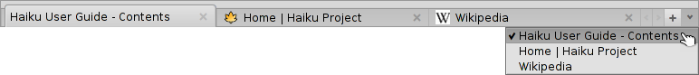

中文 ［中文］
中文 ［中文］ Français
Français Deutsch
Deutsch Italiano
Italiano Русский
Русский Español
Español Svenska
Svenska 日本語
日本語 Українська
Українська Português
Português English
EnglishWebPositive
| 桌面栏： | ||
| 位置： | /boot/system/apps/WebPositive | |
| 设置： | ~/config/settings/WebPositive/ - 配置文件，Cookies，缓存文件和浏览历史 | |
| ~/config/settings/WebPositive/Bookmarks - 所有的书签都是单个的文件。 |
WebPositive，简称 Web+，是 Haiku 的原生网络浏览器。它的命名一半来源于 BeOS 的简洁浏览器 - Netpositive，而另一半则源于它的现代浏览器核心：WebKit。WebKit 的开源 HTML 渲染库也是其他主流浏览器的核心，例如，Mac OS X 的 Safari 和 Google 的 Chrome。随着 WebKit 的不断发展， Web+ 将能够很快的赶上最新的网络应用技术。

WebPositive 的界面非常直观：在菜单栏之下是常用按钮栏，其中包括可用于导航至浏览历史的上一页和下一页，停止载入页面，以及（可选的）跳转至主页的按钮。
之后就是用于输入站点网址的文本域。
在导航栏之下就是网页区域。您可以同时打开多个页面，并将其载入各自的标签。
在窗口的底部是状态栏，其中将会显示正在载入的站点或者鼠标指针所指向链接的地址。当页面载入时，在右端将会显示一个进度条。
 设置
设置
您可以从 菜单中打开 面板以配置 WebPositive 的一些组件。

第一个标签用于常规设置：作为 的文件或网址， ， 用于放置网络下载文件的 。
两个弹出菜单可用于设置载入页面 - 当打开新窗口或标签时。
通过下面的选择框，您可以避免在打开单个页面时显示标签栏。 WebPositive 的界面在全屏模式时可以自动隐藏，并且在停止移动一段时间后，鼠标也会自动隐藏。
最后，您可以决定是否在导航栏中包含 “Home” 按钮，并且可以设置浏览器记录的访问历史保存时间。
在第二个标签中，您可以选择标准，加粗，未加粗以及等宽字体，并且设置它们的默认尺寸。
最后一个标签用于配置代理服务器。
浏览
如果您曾经使用过其他的浏览器，WebPositive 将不会有很大不同。无需查看它的每个菜单项和特性，让我们注意一下几点：
- 
新标签可以通过标签栏右侧的 + 键进行创建，如果有足够空间的话，可以通过双击右侧的空白区域予以创建。如果打开的标签数量出了标签栏区域， < > 滚动键将会激活，允许您左右切换标签。最右侧的 ∨ 弹出菜单可以对所有的标签进行快速导航。
使用鼠标中键点击链接将会在后台新标签中打开页面。
您可以从 菜单中 和 页面。还有一个选项用于 ，而所有的图像都保持原始尺寸。
如果您切换到了全屏模式，并且激活了隐藏界面的设置，在一秒钟之后，界面将自动隐藏。为了将其暂时显示，您只需要移动鼠标指针到屏幕顶部即可。

当您地址栏中输入时，浏览器将会在地址栏下显示并列出匹配您曾经输入内容的项目。您可以输入更多字符来缩小匹配站点，或者使用 ↑ 或 ↓ 来选中某个站点。按下 ENTER 将会载入该页面。您也可以使用地址栏最右侧的控件重新载入页面。
未匹配为 URL 的字符串将会在 Google 中进行搜索。因此地址栏还可以作为网络搜索的快捷方式。右键点击打开菜单，根据所点击对象的不同，其可以选择在新窗口或标签中打开链接，或者下载对象等。
在底部显示一个查找栏用于启动页内搜索。匹配项将会在页面内高亮显示。
书签
WebPositive 的书签以文件和目录的形式存在于 ~/config/settings/WebPositive/Bookmarks/ 中。添加书签将会在此创建一个新文件。 您可以通过 快速的打开该文件夹。

您可以修改书签的 URL，名称，标题，并且可以像处理其他文件的属性那样输入关键字。您只需通过在文件浏览器的 菜单显示所有的内容，然后选中一个文件，按下 ALT E 即可以编辑属性，并且通过 TAB 键切换修改属性。
您可以将书签整理到自己创建的不同文件夹中。
通过文件浏览器管理和导航书签的方式，您可以使用它的特性快速的找到自己的目标。
在文件浏览器首选项中激活 ，您可以立即缩小匹配过滤字符串的列表范围。同时可以使用 ↑ 和 ↓ 移动选中项，按下 ENTER 打开站点。请确保显示所有的属性列以便使过滤器应用于名称，标题，URL及关键字。
如果希望可以执行此操作，所有的书签需要保存于 ~/config/settings/WebPositive/Bookmarks/ 文件夹，并且所有的副本都需要放入自定义的子文件夹中以便在 WebPositive 的 菜单中使用（如果这样的话）。同时，实际的填写关键字属性将很有帮助...
下载
将打开一个窗口，其中列出所有已完成的和正下载的内容：

当前下载的文件将会显示进度栏，和文件浏览器中的文件复制相似，还会显示下载速度，文件大小和预期完成时间等信息。右边的按钮可用于 和 下载， 文件，以及从列表中 条目。位于底部的 和 作用于列表中的所有项目。"丢失项"是指当时删除的文件。
将当前下载的文件移动到垃圾箱将会终止下载。您可能也注意到，它的图标将会变成"灰色"的。
通常，在通过文件浏览器管理文件时，WebPositive 是能够容忍的。在文件下载甚至下载之后，这些文件都是可以重命名或者删除的，并且这些修改将会反馈到下载窗口。
是否曾经想知道您所下载的某个包，图像或任何其他文件出自的站点？您可以使用 磁盘扫描器 打开文件，然后查看它的 META:url 属性来获取该信息。
希望某个 URL 永久的显示在您的下载文件夹中吗？您只需要复制一个书签到其中，然后显示书签的 URL 属性列，之后删除该书签即可。
快捷键
下面是一些有用的快捷键：
| ALT T | 打开新的标签。 | |
| ALT W | 关闭当前标签。 | |
| ALT N | 打开新窗口。 | |
| SHIFT ALT W | 关闭当前窗口。 | |
| ALT ENTER | 切换全屏模式。 | |
| ALT R 或 F5 | 刷新当前页面。 | |
| ALT H | 打开主页。 | |
| ALT D | 显示/隐藏下载窗口。 | |
| ALT F | 显示页内搜索的进度条（可以通过 ESC 隐藏）。 | |
| ALT B | 添加页面为书签。 | |
| ALT M | 管理书签，打开书签目录。 | |
| ALT ← | 浏览历史中的前一页。 | |
| ALT → | 浏览历史中的后一页。 |